Back to the photo index
Fed up with wet and warm winters in Britain, John and I decided the time had come to look elsewhere. Our requirements were simple: short walk-ins, reliable ice, no rain and quality country and western. So plans were made and in January 2004 John landed at Boston Logan airport for two weeks of climbing frozen water, getting cold and top notch radio.
As was to be expected, things didn't go exactly to plan. Ten minutes out of Boston on I93 the car started to shake violently and we soon found ourselves stopped on the shoulder with a blown tyre. Great.
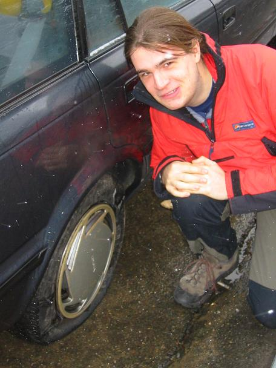
10:58am : John looking guilty and wondering what or who will break next
The plan was to climb at The Flume, a gorge twenty minutes from the road in Franconia Notch. After hiking up the trail for an hour, we were convinced that the guide book's directions were wrong and that there was no time to make it to The Flume. Fortunately, we came across Stairs Falls, and decided to play there instead.
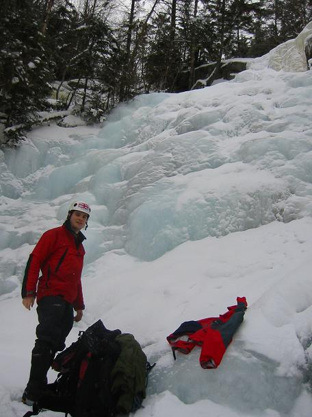
2:51pm : Our first taste of thick ice, clear skies and no rain
Ignoring the guide book and following the huge highway signs for Flume Visitors' Center", we soon found the right spot and spent the day top-roping various climbs and forgetting to take pictures.
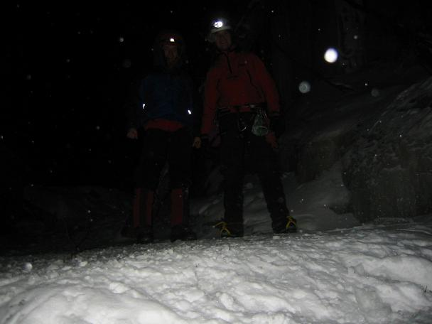
5:27pm : Carried away with the climbing, it's suddenly too dark to see anything
Today saw more top-roping and ludicrously low temperatures - we were the only ones to brave the conditions for more than one climb.
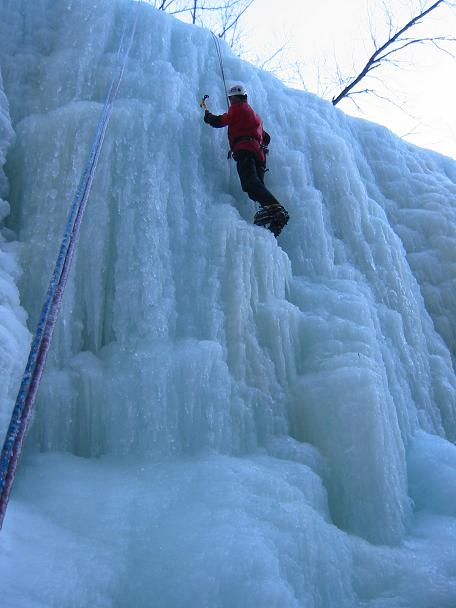
2:48pm : In an attempt to get a feel for the grading system, John climbs something a bit steeper than a grade 3
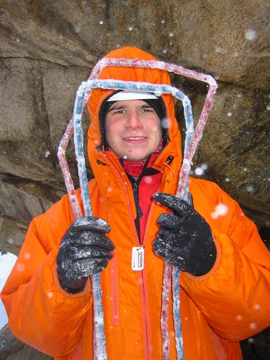
3:15pm : Saddly, the day's roped climbing was cut short by rope issues
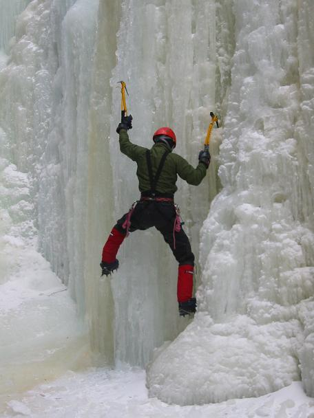
3:35pm : With the ropes out of action, we began a traverse of the cliff - much harder than it looks!
We drove back to Boston on Tuesday night to thaw ropes, mend our broken tent, and repair John's foot. After a day recouperating, we returned to the flume for some steep ice action. We climbed the pillar on the left, then decided to take on the hanging ice curtain. After I'd hauled myself straight up the front, John decided on a more devious route up the back.
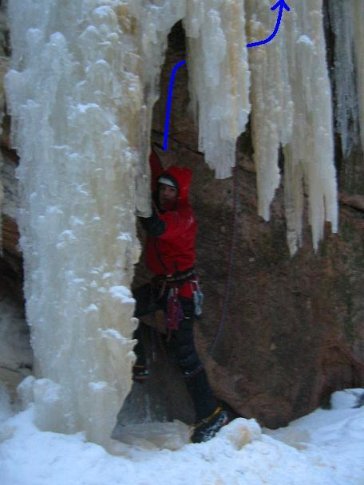
4:36pm : John sets off up the back of the hanging curtain, planning to squeeze his way through a gap in the ice
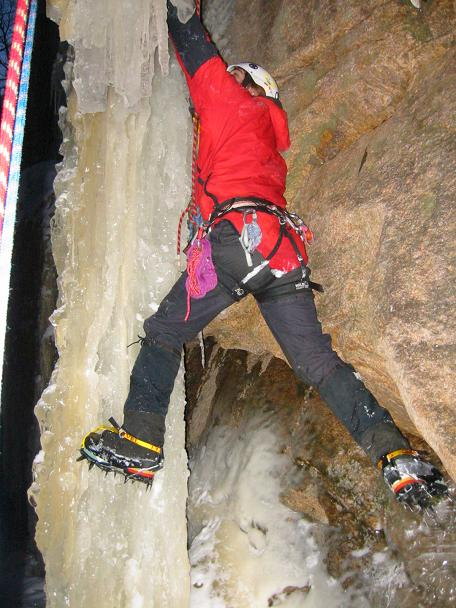
4:44pm : A bit of bridging...
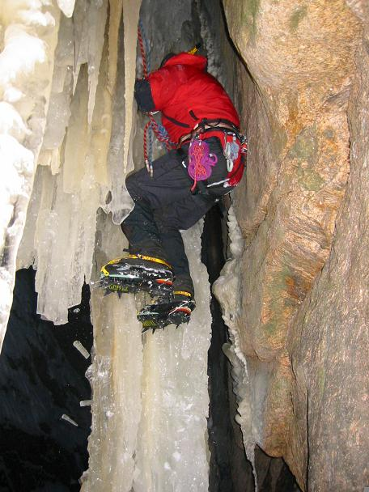
4:46pm : ...a bit of back-and-footing...
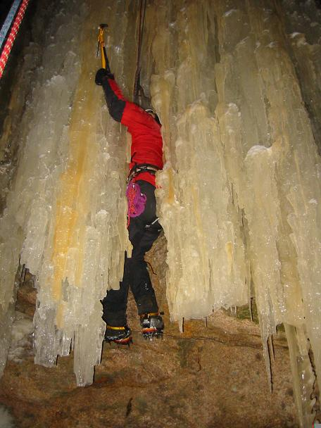
4:54pm : ...and an axe appears throught the curtain
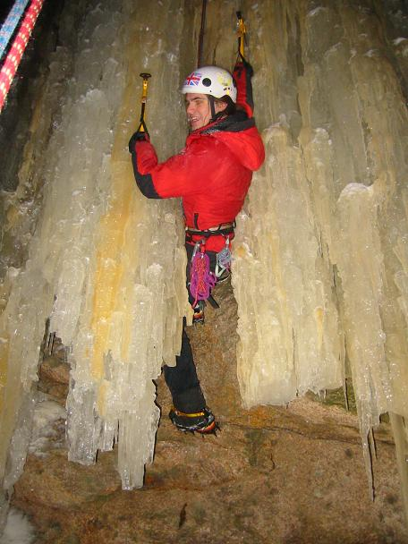
5:00pm : After a little excavation, with crampons scratching on the rock, John emerges through the crack
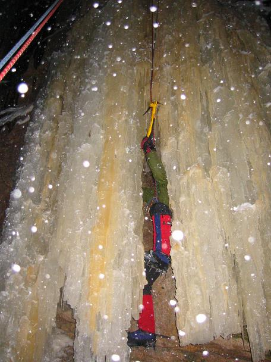
5:24pm : Steve attempts the same tactics, as darkness falls and it starts to snow
Our first day leading - a grade 2, a 2+, a 3 and then something round about a 3+ in the dark while Steve quielty freezes to death belaying. Shame we forgot to take any photos in all the excitement.
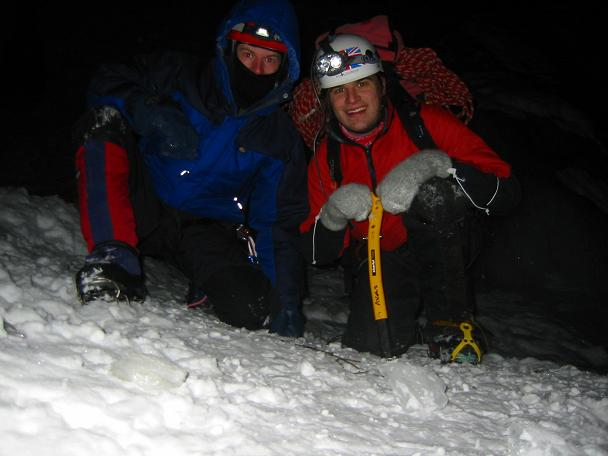
6:28pm : After rigging an abseil by Braille, John finally arrives back on the ground
On Friday night we met up with Cruftlabs people and friends for a night of luxiourious indulgence at a motel. Our hundred-dollar single-glazed unheated room for two proved slightly better value for money with six of us sleeping in it. Today wasn't quite the hardcore Mount Washington summit attempt we'd expected, but turned out to be a high-altitude, low-temperature sledging trip instead.
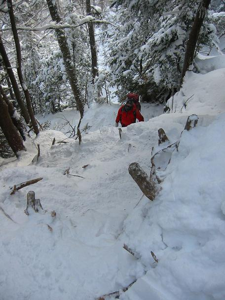
1:06pm : Hiking up the Lionshead Trail at -25 degC and we're still below treeline
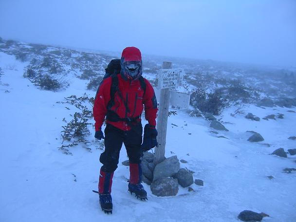
3:16pm : Steve looking frosty at the day's high-point, about half a mile from the summit
We'd planned to climb at Frankenstein today, but the weather was too perfect to waste down low. By the time we got to North Conway we could see the summit of Mount Washington and it was just too tempting to ignore.
9:08am : Mount Washington from North Conway
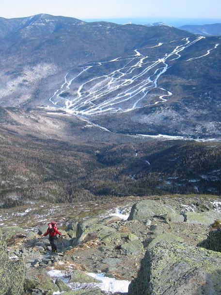
1:10pm : Approaching Lion's Head under clear skies and sunshine
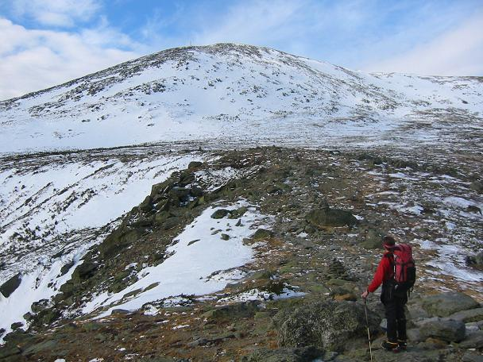
1:14pm : Looking up at the summit cone from Lion's Head
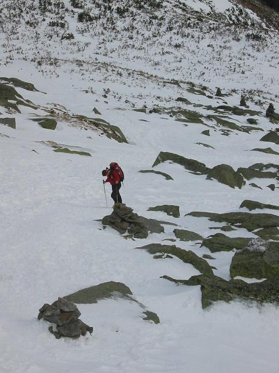
1:46pm : John looking wrecked on a very steep snow slope
Forty-eight hours previously, the weather on Mount Washington was comparable to that on Everest. Somehow we felt a little cheated!
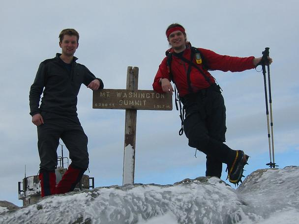
2:43pm : Standing on the summit at a balmy -5 degC
Today's plan was to climb Standard Left on Frankenstein as a warm-up before attempting the area's classic Standard Route. The route was great, but sadly took us all day, and of course we forgot to take the camera on the climb.

10:13am : Standard Route and Standard Left looking much less steep than they really are (you can guess which is which)
Feeling refreshed after a night in the Best Value Hotel in the Whole World Ever (TM), we returned to Frankenstein for Standard Route. And mighty fine it was too.
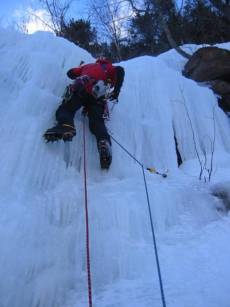
1:58pm : Textbook screw placement on the first bulge of the third pitch
After completing Standrd Route in a more respectable four hours, we decided to squeeze in another route before dark. Needless to say, the day ended with more abseiling by braille.

4:33pm : Steve leading Waterfall as the light begins to fade
With bruised knuckles and a howling wind, we decided to finish off the trip with some more top-roping. We returned to Frankenstein and after leading a short pitch at Trestle Cut Flows, played around on some steep thin ice.
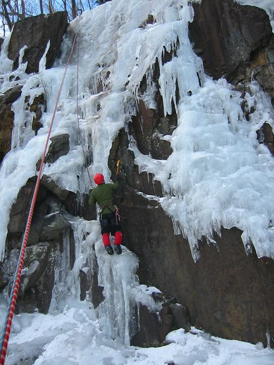
3:57pm : Steve attacks a thin icicle

4:21pm : John contemplates a gap in the ice
Back to the photo index